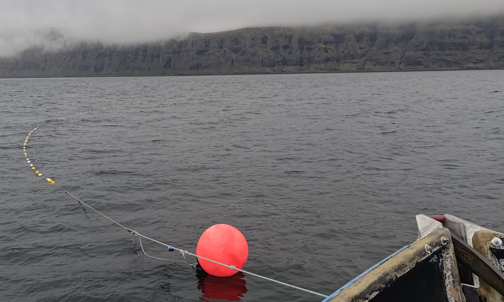

Summer Plans
I mentioned, during my last stream, that I’d put up a post here, in the blog I keep forgetting not making the time to update, regarding my hiatus, my summer, and what will come after. I had meant to update it within a week of that stream, but things got a little hectic and I let time get away from me.
So, over a month late, here it is!
So what’s the deal?
Since I started streaming well over a year ago now, and for well over a year even before that, I’ve been free from the shackles of traditional employment. Sadly, however, this doesn’t mean I’ve been free from the shackles of the burdens cast upon us by modern “civilization.” Those shackles have been growing heavier by the month and I must find a way to lighten them.
Or, to put it in a less writer-y way, my funds have been drying up and need to be refreshed. Stat.
Thankfully I had a job come up that just might provide me with enough income to keep on going for a bit longer. It’s even a job I know quite well from the many years of fishing I did it many long years ago. Unfortunately, however, it’s the kind of job that takes you away from the world for a while.
So what does that mean?
This means, as those of you who’ve been watching my streams … or the lack thereof in the last month, that I’ve had to take a step back from streaming for the time being. Whilst the boat I’m on has Starlink, a busy boat where I’m basically the equivalent of “on call” 24/7 is not a conducive environment for streaming. At all.
That said, there is ample time between those work periods where I can work on various personal projects … as the weather allows, anyways. It’s quite difficult to stay focused on anything when you’re trying to keep both yourself and your equipment from falling down onto the floor as the boat is rocking 45 degrees (or more)!
Thankfully, though, the weather isn’t like that all the time.
So what am I working on?
Whilst I don’t want to speak on all the projects I’m working on at the moment, there are some I most assuredly do want to:
Minecraft
I’m redoubling my dev efforts on the TCM modpack so it can be ready for when I make my return to streaming. The development has been shifted to 1.21.1, so I’m definitely having to redo a fair bit of work, but I feel the results will be worth it. There may also be a custom mod or two involved, but no promises on that.
I’ll be (temporarily) posting pre-alpha releases through my Discord for those who wish to contribute. Full releases will be on Modrinth and CurseForge once I feel the pack is ready for more widespread consumption.
Writing
I’ve mentioned quite often that I’m a writer, though admittedly I don’t talk too much about it. Much of that is for privacy reasons, as I’ve still not determined under what name I intend on publishing, but more of it is that I’ve just not been writing as much as I should be … which is problematic if I’m actively attempting to get a book or few published. So writing is my other primary focus.
Blogging
Yeah, I’ve said it before, that I’ll be posting more here … and that’s mostly just not happened. I still won’t make any promises, due to my other foci being far more important to me at the moment, but I’ll still try to do a few. I already have one partially written based on some recent work I’ve done, so that’ll be posted relatively soon.
Everything Else
I’ve a few other projects I’m working on as well, and a few of you know what some of them are, but I want to keep them mostly under wraps so they’re more of a surprise when I finish getting them ready. I’m quite excited for them, and it’s hard for me to not talk about them, so don’t expect to be waiting too long to find out what they are. ^.^
So when will I return?
I should be back home sometime in mid-to-late August or early September. So long as it’s within my power, and it should be, I’ll be home before PAX West, which is Labour Day weekend for those unfamiliar with the convention. Unlike my prior and much shorter breaks, I won’t return to streaming immediately upon my return. There are a few things I want to get ready so as to make my return as special as I can as thanks to everyone for bearing with me through this hiatus. Don’t worry. I won’t leave you waiting long.
